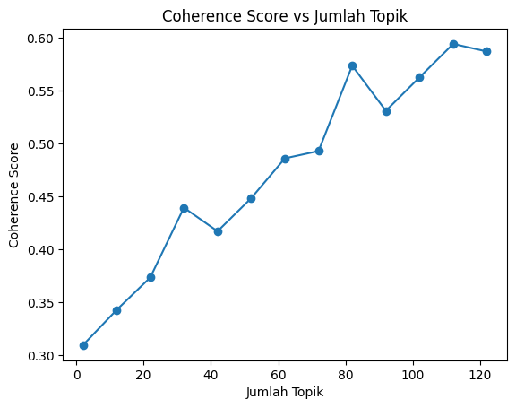
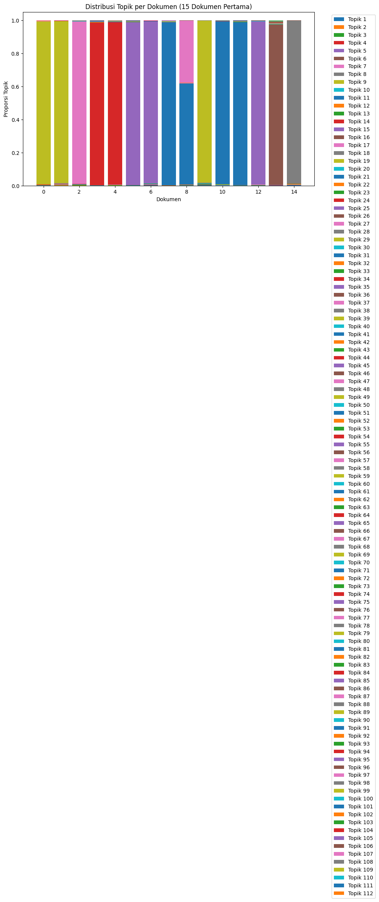
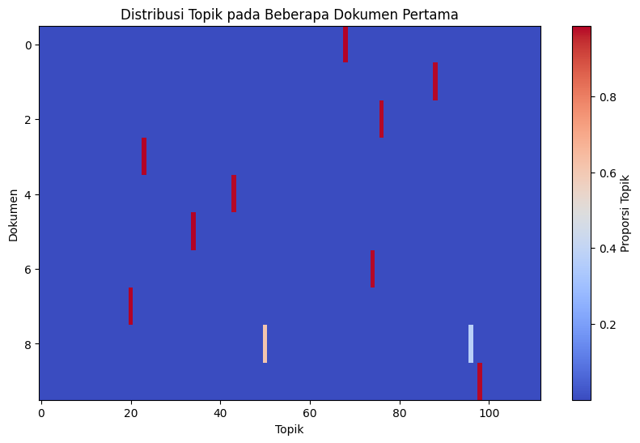
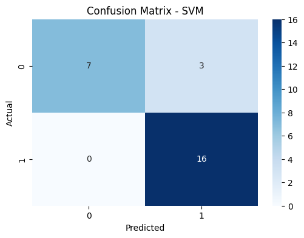
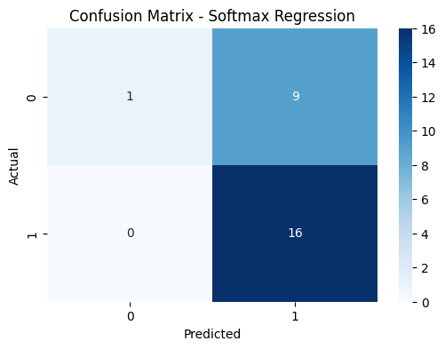

E. Melakukan Klasifikasi LDA#
Import Library
from Sastrawi.Stemmer.StemmerFactory import StemmerFactory
from Sastrawi.StopWordRemover.StopWordRemoverFactory import StopWordRemoverFactory
import pandas as pd
import numpy as np
import re
import string
import matplotlib.pyplot as plt
from sklearn.model_selection import train_test_split
from sklearn.feature_extraction.text import TfidfVectorizer
from sklearn.naive_bayes import MultinomialNB
from sklearn.metrics import accuracy_score, precision_score, recall_score, f1_score, classification_report, confusion_matrix
from gensim import corpora
from gensim.models.ldamodel import LdaModel
from gensim.models import CoherenceModel
import seaborn as sns
Membaca Dataset
# Baca dataset
df = pd.read_csv('kompas_articles_new.csv')
# Atur agar Pandas menampilkan semua baris
pd.set_option('display.max_rows', None)
print("Jumlah total berita:", len(df))
# Tampilkan semua isi dataframe
display(df)
---------------------------------------------------------------------------
FileNotFoundError Traceback (most recent call last)
Cell In[2], line 2
1 # Baca dataset
----> 2 df = pd.read_csv('kompas_articles_new.csv')
4 # Atur agar Pandas menampilkan semua baris
5 pd.set_option('display.max_rows', None)
File ~/.local/lib/python3.12/site-packages/pandas/io/parsers/readers.py:1026, in read_csv(filepath_or_buffer, sep, delimiter, header, names, index_col, usecols, dtype, engine, converters, true_values, false_values, skipinitialspace, skiprows, skipfooter, nrows, na_values, keep_default_na, na_filter, verbose, skip_blank_lines, parse_dates, infer_datetime_format, keep_date_col, date_parser, date_format, dayfirst, cache_dates, iterator, chunksize, compression, thousands, decimal, lineterminator, quotechar, quoting, doublequote, escapechar, comment, encoding, encoding_errors, dialect, on_bad_lines, delim_whitespace, low_memory, memory_map, float_precision, storage_options, dtype_backend)
1013 kwds_defaults = _refine_defaults_read(
1014 dialect,
1015 delimiter,
(...) 1022 dtype_backend=dtype_backend,
1023 )
1024 kwds.update(kwds_defaults)
-> 1026 return _read(filepath_or_buffer, kwds)
File ~/.local/lib/python3.12/site-packages/pandas/io/parsers/readers.py:620, in _read(filepath_or_buffer, kwds)
617 _validate_names(kwds.get("names", None))
619 # Create the parser.
--> 620 parser = TextFileReader(filepath_or_buffer, **kwds)
622 if chunksize or iterator:
623 return parser
File ~/.local/lib/python3.12/site-packages/pandas/io/parsers/readers.py:1620, in TextFileReader.__init__(self, f, engine, **kwds)
1617 self.options["has_index_names"] = kwds["has_index_names"]
1619 self.handles: IOHandles | None = None
-> 1620 self._engine = self._make_engine(f, self.engine)
File ~/.local/lib/python3.12/site-packages/pandas/io/parsers/readers.py:1880, in TextFileReader._make_engine(self, f, engine)
1878 if "b" not in mode:
1879 mode += "b"
-> 1880 self.handles = get_handle(
1881 f,
1882 mode,
1883 encoding=self.options.get("encoding", None),
1884 compression=self.options.get("compression", None),
1885 memory_map=self.options.get("memory_map", False),
1886 is_text=is_text,
1887 errors=self.options.get("encoding_errors", "strict"),
1888 storage_options=self.options.get("storage_options", None),
1889 )
1890 assert self.handles is not None
1891 f = self.handles.handle
File ~/.local/lib/python3.12/site-packages/pandas/io/common.py:873, in get_handle(path_or_buf, mode, encoding, compression, memory_map, is_text, errors, storage_options)
868 elif isinstance(handle, str):
869 # Check whether the filename is to be opened in binary mode.
870 # Binary mode does not support 'encoding' and 'newline'.
871 if ioargs.encoding and "b" not in ioargs.mode:
872 # Encoding
--> 873 handle = open(
874 handle,
875 ioargs.mode,
876 encoding=ioargs.encoding,
877 errors=errors,
878 newline="",
879 )
880 else:
881 # Binary mode
882 handle = open(handle, ioargs.mode)
FileNotFoundError: [Errno 2] No such file or directory: 'kompas_articles_new.csv'
Preprocessing Data
def preprocess_data(df, source_col="Isi (100 kata)"):
factory = StemmerFactory()
stemmer = factory.create_stemmer()
stop_factory = StopWordRemoverFactory()
stopwords = set(stop_factory.get_stop_words())
clean_texts = []
for text in df[source_col].fillna("").astype(str):
text = text.lower()
text = re.sub(r'http\S+|www\S+|https\S+', '', text)
text = text.translate(str.maketrans('', '', string.punctuation))
text = re.sub(r'\d+', '', text)
tokens = text.split()
tokens = [t for t in tokens if t not in stopwords and len(t) > 1]
stemmed = [stemmer.stem(t) for t in tokens]
clean_texts.append(" ".join(stemmed))
df["clean"] = clean_texts
return df
df_clean = preprocess_data(df)
display(df_clean.head())
| Judul | Isi (100 kata) | Kategori | URL | Status | clean | |
|---|---|---|---|---|---|---|
| 0 | Jokowi Kenakan Pakaian Adat Betawi di Sidang T... | JAKARTA, KOMPAS.com- Presiden Joko Widodo mema... | Nasional | https://nasional.kompas.com/read/2024/08/16/11... | Sukses | jakarta kompascom presiden joko widodo pakai b... |
| 1 | KPU Tegaskan Pemilih Tak Terdaftar di DPT Bisa... | JAKARTA, KOMPAS.com- Komisi Pemilihan Umum (KP... | Nasional | https://nasional.kompas.com/read/2024/02/13/21... | Sukses | jakarta kompascom komisi pilih umum kpu ri pas... |
| 2 | Warga Sebut Ada Benda Serupa Jimat pada Mayat ... | TANGERANG SELATAN, KOMPAS.com- Seutas tali ber... | Megapolitan | https://megapolitan.kompas.com/read/2024/05/11... | Sukses | tangerang selatan kompascom utas tali warna hi... |
| 3 | Polisi Menganiaya Mereka yang Cinta Damai dan ... | JAKARTA, KOMPAS.com- Sejumlah massa mendapat k... | Megapolitan | https://megapolitan.kompas.com/read/2024/08/26... | Sukses | jakarta kompascom jumlah massa dapat keras apa... |
| 4 | Airlangga Hartarto Mundur dari Ketum, Golkar B... | JAKARTA, KOMPAS.com- Airlangga Hartarto secara... | Nasional | https://nasional.kompas.com/read/2024/08/12/08... | Sukses | jakarta kompascom airlangga hartarto resmi und... |
Tokenisasi, Dictionary, dan Corpus
texts = [doc.split() for doc in df_clean["clean"]]
dictionary = corpora.Dictionary(texts)
dictionary.filter_extremes(no_below=2, no_above=0.5)
corpus = [dictionary.doc2bow(text) for text in texts]
Menentukan Model LDA Terbaik (dengan Coherence Score)
coherence_values = []
model_list = []
topic_range = range(2, 130, 10)
for num_topics in topic_range:
model = LdaModel(
corpus=corpus,
num_topics=num_topics,
id2word=dictionary,
random_state=42,
passes=10,
iterations=100
)
model_list.append(model)
coherencemodel = CoherenceModel(model=model, texts=texts, dictionary=dictionary, coherence='c_v')
coherence_values.append(coherencemodel.get_coherence())
# Visualisasi Coherence Score
plt.plot(topic_range, coherence_values, marker='o')
plt.xlabel("Jumlah Topik")
plt.ylabel("Coherence Score")
plt.title("Coherence Score vs Jumlah Topik")
plt.show()
# Model terbaik
optimal_model = model_list[coherence_values.index(max(coherence_values))]
optimal_topics = topic_range[coherence_values.index(max(coherence_values))]
print("✅ Model terbaik memiliki", optimal_topics, "topik")
print("Coherence Score terbaik:", max(coherence_values))

✅ Model terbaik memiliki 112 topik
Coherence Score terbaik: 0.5944232145404877
Melakukan Topik yang terbaik
for idx, topic in optimal_model.print_topics(-1):
print(f"\nTopik {idx+1}: {topic}")
Topik 1: 0.067*"rumah" + 0.067*"baswedan" + 0.050*"tempat" + 0.050*"bagi" + 0.033*"satu" + 0.033*"atas" + 0.033*"anies" + 0.033*"sembunyi" + 0.033*"nomor" + 0.033*"salah"
Topik 2: 0.001*"tni" + 0.001*"pilkada" + 0.001*"kepala" + 0.001*"pilih" + 0.001*"bambang" + 0.001*"tetap" + 0.001*"adu" + 0.001*"kan" + 0.001*"militer" + 0.001*"kok"
Topik 3: 0.038*"pramono" + 0.038*"gubernur" + 0.031*"sehat" + 0.031*"periksa" + 0.030*"kader" + 0.029*"partai" + 0.021*"aku" + 0.021*"calon" + 0.021*"usung" + 0.019*"jadi"
Topik 4: 0.034*"belanja" + 0.034*"layan" + 0.034*"bpom" + 0.025*"daerah" + 0.025*"laku" + 0.017*"publik" + 0.017*"kantor" + 0.017*"segera" + 0.017*"persen" + 0.017*"lihat"
Topik 5: 0.001*"warga" + 0.001*"tanding" + 0.001*"dki" + 0.001*"bangun" + 0.001*"pemprov" + 0.001*"bola" + 0.001*"dprd" + 0.001*"tahu" + 0.001*"anggar" + 0.001*"internasional"
Topik 6: 0.035*"pdip" + 0.028*"jamin" + 0.028*"ketua" + 0.028*"megawati" + 0.028*"rakyat" + 0.021*"hukum" + 0.021*"metro" + 0.021*"polda" + 0.021*"jaya" + 0.021*"kader"
Topik 7: 0.031*"kaesang" + 0.023*"hak" + 0.023*"angket" + 0.023*"negara" + 0.016*"kait" + 0.016*"komunikasi" + 0.016*"politik" + 0.016*"mesti" + 0.016*"wacana" + 0.016*"tengah"
Topik 8: 0.051*"minta" + 0.051*"indra" + 0.051*"krl" + 0.034*"atas" + 0.034*"sengaja" + 0.034*"tujuh" + 0.034*"ulang" + 0.034*"buat" + 0.034*"korban" + 0.034*"surat"
Topik 9: 0.045*"dpr" + 0.025*"pilkada" + 0.025*"jalan" + 0.020*"mk" + 0.020*"putus" + 0.020*"wakil" + 0.020*"gedung" + 0.020*"tak" + 0.015*"habiburokhman" + 0.015*"baleg"
Topik 10: 0.003*"ganti" + 0.003*"dasco" + 0.002*"menteri" + 0.002*"kader" + 0.002*"gerindra" + 0.002*"minta" + 0.002*"partai" + 0.001*"kompleks" + 0.001*"dilatarbelakangi" + 0.001*"prabowogibran"
Topik 11: 0.053*"timur" + 0.053*"laku" + 0.035*"aku" + 0.035*"jadi" + 0.035*"korban" + 0.035*"polisi" + 0.035*"bunuh" + 0.035*"kali" + 0.018*"ary" + 0.018*"sepeda"
Topik 12: 0.056*"tengah" + 0.037*"jawa" + 0.037*"sama" + 0.028*"sekolah" + 0.028*"belanja" + 0.019*"partai" + 0.019*"maju" + 0.019*"gubernur" + 0.019*"pilkada" + 0.019*"pilih"
Topik 13: 0.044*"gidion" + 0.029*"laku" + 0.029*"senioritas" + 0.029*"senior" + 0.029*"aniaya" + 0.029*"korban" + 0.029*"paling" + 0.029*"jadi" + 0.029*"kuat" + 0.029*"sebut"
Topik 14: 0.036*"orang" + 0.027*"myanmar" + 0.027*"pulang" + 0.018*"minta" + 0.018*"dapat" + 0.018*"saudara" + 0.018*"perintah" + 0.018*"segera" + 0.018*"pria" + 0.018*"jadi"
Topik 15: 0.001*"lebih" + 0.001*"global" + 0.001*"serang" + 0.001*"sedia" + 0.001*"samping" + 0.001*"palestina" + 0.001*"wilayah" + 0.001*"isu" + 0.001*"bahas" + 0.001*"desak"
Topik 16: 0.041*"negara" + 0.041*"afrika" + 0.031*"kerja" + 0.031*"jenderal" + 0.021*"beri" + 0.021*"sama" + 0.021*"jabat" + 0.021*"tni" + 0.021*"tangan" + 0.021*"selalu"
Topik 17: 0.001*"partai" + 0.001*"kaesang" + 0.001*"tahu" + 0.001*"pilkada" + 0.001*"mas" + 0.001*"psi" + 0.001*"syarat" + 0.001*"urus" + 0.001*"juli" + 0.001*"maju"
Topik 18: 0.028*"jalan" + 0.028*"lihat" + 0.028*"paus" + 0.028*"fransiskus" + 0.028*"sebut" + 0.028*"lintas" + 0.019*"depan" + 0.019*"sambut" + 0.019*"pasti" + 0.019*"mata"
Topik 19: 0.001*"lebih" + 0.001*"global" + 0.001*"serang" + 0.001*"sedia" + 0.001*"samping" + 0.001*"palestina" + 0.001*"wilayah" + 0.001*"isu" + 0.001*"bahas" + 0.001*"desak"
Topik 20: 0.060*"pramono" + 0.030*"pdip" + 0.030*"calon" + 0.030*"jadi" + 0.030*"sempat" + 0.030*"aku" + 0.030*"pikir" + 0.030*"anung" + 0.030*"ingin" + 0.030*"bakal"
Topik 21: 0.125*"golkar" + 0.063*"bahlil" + 0.063*"tum" + 0.050*"jadi" + 0.025*"tuju" + 0.025*"munas" + 0.013*"dekat" + 0.013*"selasa" + 0.013*"mulus" + 0.013*"orang"
Topik 22: 0.003*"etik" + 0.002*"kpk" + 0.002*"hadir" + 0.002*"sidang" + 0.002*"kamis" + 0.002*"dewas" + 0.002*"proses" + 0.002*"alas" + 0.002*"duga" + 0.001*"tan"
Topik 23: 0.052*"kpk" + 0.039*"tan" + 0.026*"tani" + 0.026*"dewas" + 0.026*"pimpin" + 0.026*"lapor" + 0.026*"nyata" + 0.026*"enggak" + 0.026*"kait" + 0.026*"ketua"
Topik 24: 0.044*"aparat" + 0.044*"dapat" + 0.029*"dpr" + 0.029*"polisi" + 0.029*"keras" + 0.029*"jumlah" + 0.029*"pukul" + 0.029*"demo" + 0.015*"lembaga" + 0.015*"jaya"
Topik 25: 0.102*"paus" + 0.068*"fransiskus" + 0.051*"tahun" + 0.051*"usia" + 0.034*"turun" + 0.034*"anak" + 0.017*"kursi" + 0.017*"dua" + 0.017*"udara" + 0.017*"mobil"
Topik 26: 0.038*"jadi" + 0.028*"usaha" + 0.028*"layan" + 0.019*"tuju" + 0.019*"riau" + 0.019*"direktur" + 0.019*"hari" + 0.019*"laku" + 0.019*"senin" + 0.019*"mula"
Topik 27: 0.002*"kondisi" + 0.002*"proses" + 0.002*"baik" + 0.001*"milik" + 0.001*"banyak" + 0.001*"mobil" + 0.001*"masyarakat" + 0.001*"ikut" + 0.001*"rp" + 0.001*"ibu"
Topik 28: 0.001*"tali" + 0.001*"pria" + 0.001*"warna" + 0.001*"tangerang" + 0.001*"temu" + 0.001*"selatan" + 0.001*"sabtu" + 0.001*"sidik" + 0.001*"hitam" + 0.001*"tempat"
Topik 29: 0.001*"nasdem" + 0.001*"partai" + 0.001*"komunikasi" + 0.001*"politik" + 0.001*"paling" + 0.001*"pilkada" + 0.001*"ridwan" + 0.001*"barat" + 0.001*"jawa" + 0.001*"terus"
Topik 30: 0.038*"wakil" + 0.030*"ketua" + 0.030*"dpr" + 0.023*"iskandar" + 0.023*"jazilul" + 0.023*"ri" + 0.023*"langgar" + 0.023*"capres" + 0.015*"selasa" + 0.015*"salam"
Topik 31: 0.115*"kota" + 0.100*"bekas" + 0.057*"calon" + 0.043*"kpud" + 0.043*"terima" + 0.043*"periksa" + 0.043*"kpu" + 0.029*"sehat" + 0.029*"ali" + 0.029*"wali"
Topik 32: 0.044*"tni" + 0.044*"partai" + 0.030*"pilih" + 0.030*"pilkada" + 0.029*"golkar" + 0.022*"kepala" + 0.022*"umum" + 0.022*"minta" + 0.022*"kader" + 0.022*"pdip"
Topik 33: 0.002*"jaya" + 0.002*"aman" + 0.002*"kunjung" + 0.002*"gelar" + 0.002*"fransiskus" + 0.002*"rangka" + 0.002*"imam" + 0.002*"giat" + 0.002*"rabu" + 0.001*"polri"
Topik 34: 0.029*"indonesia" + 0.029*"kuasa" + 0.029*"nyata" + 0.024*"tak" + 0.024*"pan" + 0.024*"sampai" + 0.018*"ikn" + 0.018*"sini" + 0.018*"udara" + 0.018*"nasional"
Topik 35: 0.058*"partai" + 0.035*"golkar" + 0.035*"prabowo" + 0.023*"politik" + 0.023*"komunikasi" + 0.023*"sebut" + 0.017*"nasdem" + 0.017*"anak" + 0.012*"umum" + 0.012*"bapak"
Topik 36: 0.037*"koalisi" + 0.029*"pks" + 0.029*"usung" + 0.029*"anies" + 0.029*"calon" + 0.029*"gubernur" + 0.022*"waktu" + 0.022*"jadi" + 0.022*"prabowo" + 0.022*"presiden"
Topik 37: 0.118*"depok" + 0.045*"daftar" + 0.045*"kpu" + 0.044*"resmi" + 0.030*"umum" + 0.030*"pilih" + 0.030*"komisi" + 0.030*"kota" + 0.030*"wali" + 0.030*"politik"
Topik 38: 0.060*"badan" + 0.060*"bpom" + 0.060*"halal" + 0.040*"tarik" + 0.040*"kepala" + 0.020*"pondok" + 0.020*"benar" + 0.020*"pasti" + 0.020*"aman" + 0.020*"tanya"
Topik 39: 0.001*"lebih" + 0.001*"global" + 0.001*"serang" + 0.001*"sedia" + 0.001*"samping" + 0.001*"palestina" + 0.001*"wilayah" + 0.001*"isu" + 0.001*"bahas" + 0.001*"desak"
Topik 40: 0.083*"rt" + 0.083*"warga" + 0.033*"jadi" + 0.033*"satu" + 0.033*"pusat" + 0.033*"ada" + 0.033*"jatuh" + 0.017*"ketua" + 0.017*"kepala" + 0.017*"ujar"
Topik 41: 0.061*"pkb" + 0.038*"muhaimin" + 0.030*"muktamar" + 0.023*"partai" + 0.023*"orang" + 0.023*"iskandar" + 0.015*"sabtu" + 0.015*"umum" + 0.015*"tak" + 0.015*"ganggu"
Topik 42: 0.042*"rokok" + 0.042*"kaesang" + 0.033*"bekas" + 0.033*"pilkada" + 0.025*"kota" + 0.025*"jual" + 0.025*"pp" + 0.025*"mas" + 0.017*"kumpul" + 0.017*"informasi"
Topik 43: 0.001*"lebih" + 0.001*"global" + 0.001*"serang" + 0.001*"sedia" + 0.001*"samping" + 0.001*"palestina" + 0.001*"wilayah" + 0.001*"isu" + 0.001*"bahas" + 0.001*"desak"
Topik 44: 0.064*"partai" + 0.064*"golkar" + 0.048*"airlangga" + 0.048*"diri" + 0.048*"umum" + 0.032*"minggu" + 0.032*"timbang" + 0.032*"pasti" + 0.032*"perintah" + 0.032*"ketua"
Topik 45: 0.001*"lebih" + 0.001*"global" + 0.001*"serang" + 0.001*"sedia" + 0.001*"samping" + 0.001*"palestina" + 0.001*"wilayah" + 0.001*"isu" + 0.001*"bahas" + 0.001*"desak"
Topik 46: 0.064*"sidang" + 0.064*"megawati" + 0.039*"pdip" + 0.026*"mpr" + 0.026*"sekaligus" + 0.026*"tahun" + 0.026*"ketua" + 0.026*"lihat" + 0.026*"hadir" + 0.013*"tuju"
Topik 47: 0.001*"lebih" + 0.001*"global" + 0.001*"serang" + 0.001*"sedia" + 0.001*"samping" + 0.001*"palestina" + 0.001*"wilayah" + 0.001*"isu" + 0.001*"bahas" + 0.001*"desak"
Topik 48: 0.042*"tak" + 0.035*"anies" + 0.024*"tni" + 0.018*"lukman" + 0.018*"orang" + 0.018*"aniaya" + 0.018*"anggota" + 0.018*"duga" + 0.018*"diri" + 0.018*"bukan"
Topik 49: 0.056*"wni" + 0.030*"indonesia" + 0.030*"retno" + 0.025*"ada" + 0.020*"luar" + 0.020*"pihak" + 0.020*"ujar" + 0.020*"negeri" + 0.015*"konflik" + 0.015*"myanmar"
Topik 50: 0.001*"lebih" + 0.001*"global" + 0.001*"serang" + 0.001*"sedia" + 0.001*"samping" + 0.001*"palestina" + 0.001*"wilayah" + 0.001*"isu" + 0.001*"bahas" + 0.001*"desak"
Topik 51: 0.029*"calon" + 0.027*"stip" + 0.023*"sebut" + 0.023*"hasil" + 0.018*"mk" + 0.018*"putus" + 0.014*"nyata" + 0.014*"kampus" + 0.014*"orang" + 0.014*"keras"
Topik 52: 0.040*"tambang" + 0.024*"duga" + 0.024*"sita" + 0.024*"izin" + 0.024*"usaha" + 0.024*"wajib" + 0.024*"jaksa" + 0.016*"syl" + 0.016*"mobil" + 0.016*"unit"
Topik 53: 0.001*"lebih" + 0.001*"global" + 0.001*"serang" + 0.001*"sedia" + 0.001*"samping" + 0.001*"palestina" + 0.001*"wilayah" + 0.001*"isu" + 0.001*"bahas" + 0.001*"desak"
Topik 54: 0.002*"keluarga" + 0.002*"hilang" + 0.002*"juli" + 0.002*"rasa" + 0.002*"pihak" + 0.002*"lantar" + 0.002*"tak" + 0.002*"acara" + 0.001*"bekas" + 0.001*"telepon"
Topik 55: 0.044*"paus" + 0.044*"katolik" + 0.044*"gereja" + 0.029*"hapus" + 0.029*"ingin" + 0.029*"percaya" + 0.029*"tingkat" + 0.029*"antaragama" + 0.029*"dialog" + 0.029*"saling"
Topik 56: 0.037*"paus" + 0.037*"jadi" + 0.037*"anies" + 0.030*"agama" + 0.030*"ikat" + 0.030*"ridwan" + 0.030*"kamil" + 0.022*"fransiskus" + 0.022*"jaga" + 0.022*"penting"
Topik 57: 0.066*"partai" + 0.049*"nasdem" + 0.033*"sebut" + 0.033*"nama" + 0.033*"gubernur" + 0.033*"pilkada" + 0.033*"anies" + 0.033*"sampai" + 0.017*"internal" + 0.017*"dukung"
Topik 58: 0.001*"lebih" + 0.001*"global" + 0.001*"serang" + 0.001*"sedia" + 0.001*"samping" + 0.001*"palestina" + 0.001*"wilayah" + 0.001*"isu" + 0.001*"bahas" + 0.001*"desak"
Topik 59: 0.042*"paus" + 0.042*"fransiskus" + 0.033*"warga" + 0.025*"merdeka" + 0.025*"istana" + 0.025*"tunggu" + 0.025*"rabu" + 0.025*"aman" + 0.025*"jaya" + 0.017*"lewat"
Topik 60: 0.002*"gidion" + 0.002*"sebut" + 0.002*"kuat" + 0.002*"jadi" + 0.002*"paling" + 0.001*"korban" + 0.001*"aniaya" + 0.001*"senior" + 0.001*"senioritas" + 0.001*"laku"
Topik 61: 0.062*"bekas" + 0.053*"kota" + 0.036*"sosok" + 0.027*"daring" + 0.027*"libat" + 0.027*"sindikat" + 0.027*"inisial" + 0.027*"kpu" + 0.027*"tiba" + 0.018*"badan"
Topik 62: 0.001*"pkb" + 0.001*"muhaimin" + 0.001*"iskandar" + 0.001*"organisasi" + 0.001*"partai" + 0.001*"jadi" + 0.001*"libat" + 0.001*"pbnu" + 0.001*"imin" + 0.001*"ranah"
Topik 63: 0.050*"pramono" + 0.050*"pdip" + 0.038*"nama" + 0.038*"usung" + 0.038*"partai" + 0.038*"anung" + 0.025*"jadi" + 0.025*"pilkada" + 0.025*"masuk" + 0.025*"said"
Topik 64: 0.046*"universitas" + 0.030*"mahasiswa" + 0.030*"sampai" + 0.023*"massa" + 0.023*"demonstrasi" + 0.023*"ri" + 0.023*"dpr" + 0.023*"aksi" + 0.023*"polisi" + 0.023*"desak"
Topik 65: 0.018*"jadi" + 0.018*"tahan" + 0.014*"laku" + 0.014*"rumah" + 0.014*"bangun" + 0.014*"sama" + 0.014*"kota" + 0.014*"masyarakat" + 0.011*"haji" + 0.011*"mahasiswa"
Topik 66: 0.001*"lebih" + 0.001*"global" + 0.001*"serang" + 0.001*"sedia" + 0.001*"samping" + 0.001*"palestina" + 0.001*"wilayah" + 0.001*"isu" + 0.001*"bahas" + 0.001*"desak"
Topik 67: 0.034*"prabowo" + 0.034*"warga" + 0.025*"tni" + 0.025*"polri" + 0.025*"presiden" + 0.025*"tanding" + 0.017*"ujar" + 0.017*"kendali" + 0.017*"bawah" + 0.017*"tetap"
Topik 68: 0.001*"lebih" + 0.001*"global" + 0.001*"serang" + 0.001*"sedia" + 0.001*"samping" + 0.001*"palestina" + 0.001*"wilayah" + 0.001*"isu" + 0.001*"bahas" + 0.001*"desak"
Topik 69: 0.055*"ri" + 0.047*"dpr" + 0.039*"presiden" + 0.039*"tahun" + 0.039*"pakai" + 0.031*"hari" + 0.031*"betawi" + 0.031*"ingat" + 0.024*"tanggal" + 0.024*"kota"
Topik 70: 0.061*"komisi" + 0.061*"senin" + 0.046*"dpr" + 0.046*"ii" + 0.030*"kpu" + 0.030*"kemarin" + 0.030*"hari" + 0.030*"rapat" + 0.015*"kan" + 0.015*"selasa"
Topik 71: 0.153*"depok" + 0.070*"imam" + 0.056*"lanjut" + 0.056*"kota" + 0.042*"sejahtera" + 0.042*"wali" + 0.042*"program" + 0.028*"mohammad" + 0.028*"beberapa" + 0.028*"warga"
Topik 72: 0.035*"lalu" + 0.026*"warga" + 0.026*"selatan" + 0.026*"anak" + 0.026*"polri" + 0.026*"laku" + 0.017*"proses" + 0.017*"lintas" + 0.017*"tuju" + 0.017*"kendara"
Topik 73: 0.057*"lapor" + 0.042*"rizki" + 0.042*"metro" + 0.042*"duga" + 0.028*"anak" + 0.028*"suami" + 0.028*"tindak" + 0.028*"depok" + 0.028*"aniaya" + 0.028*"pidana"
Topik 74: 0.031*"jokowi" + 0.031*"mahasiswa" + 0.023*"ikn" + 0.016*"minta" + 0.016*"ui" + 0.016*"tol" + 0.016*"ilmu" + 0.016*"sampai" + 0.016*"rakyat" + 0.016*"hijau"
Topik 75: 0.073*"depok" + 0.042*"kasus" + 0.033*"beri" + 0.025*"orang" + 0.024*"sebut" + 0.024*"hukum" + 0.024*"kuasa" + 0.024*"balita" + 0.024*"irianty" + 0.024*"meita"
Topik 76: 0.051*"presiden" + 0.051*"palestina" + 0.034*"negara" + 0.034*"prabowo" + 0.034*"serang" + 0.017*"sekaligus" + 0.017*"ri" + 0.017*"mana" + 0.017*"bahas" + 0.017*"bunuh"
Topik 77: 0.027*"pdip" + 0.027*"olahraga" + 0.027*"tali" + 0.027*"warna" + 0.018*"rakernas" + 0.018*"politik" + 0.018*"obor" + 0.018*"ajar" + 0.018*"lokasi" + 0.018*"sendiri"
Topik 78: 0.045*"bekas" + 0.038*"kota" + 0.038*"pkb" + 0.038*"lapor" + 0.038*"sepeda" + 0.030*"lajur" + 0.023*"polres" + 0.023*"lukman" + 0.023*"rizki" + 0.023*"kait"
Topik 79: 0.033*"juang" + 0.033*"kpk" + 0.033*"etik" + 0.025*"merdeka" + 0.025*"atas" + 0.025*"wapres" + 0.025*"pimpin" + 0.025*"dewas" + 0.025*"kamis" + 0.025*"sidang"
Topik 80: 0.063*"air" + 0.042*"tuju" + 0.042*"forum" + 0.042*"komitmen" + 0.042*"sampai" + 0.042*"nyata" + 0.042*"lanjut" + 0.042*"sebut" + 0.021*"lingkung" + 0.021*"sumber"
Topik 81: 0.041*"jadi" + 0.041*"bahlil" + 0.041*"ketua" + 0.028*"partai" + 0.028*"sebut" + 0.027*"calon" + 0.027*"lebih" + 0.027*"penting" + 0.027*"minta" + 0.027*"umum"
Topik 82: 0.052*"beri" + 0.035*"dukung" + 0.035*"pilkada" + 0.035*"rekomendasi" + 0.035*"ahmad" + 0.017*"satu" + 0.017*"bakal" + 0.017*"janji" + 0.017*"lanjut" + 0.017*"prabowo"
Topik 83: 0.067*"pt" + 0.050*"tiket" + 0.050*"hari" + 0.050*"berangkat" + 0.034*"kereta" + 0.034*"april" + 0.034*"lalu" + 0.034*"resmi" + 0.034*"jumat" + 0.034*"api"
Topik 84: 0.001*"lebih" + 0.001*"global" + 0.001*"serang" + 0.001*"sedia" + 0.001*"samping" + 0.001*"palestina" + 0.001*"wilayah" + 0.001*"isu" + 0.001*"bahas" + 0.001*"desak"
Topik 85: 0.088*"ahok" + 0.059*"pramono" + 0.044*"pak" + 0.029*"anung" + 0.029*"gubernur" + 0.029*"ide" + 0.029*"banyak" + 0.015*"pilkada" + 0.015*"lalu" + 0.015*"sebut"
Topik 86: 0.037*"partai" + 0.031*"adi" + 0.031*"politik" + 0.026*"bekas" + 0.026*"kim" + 0.026*"pilkada" + 0.021*"pilih" + 0.021*"calon" + 0.021*"punya" + 0.016*"stasiun"
Topik 87: 0.050*"barat" + 0.050*"iskandar" + 0.033*"lapor" + 0.033*"milik" + 0.033*"rp" + 0.017*"perintah" + 0.017*"capai" + 0.017*"sebar" + 0.017*"korupsi" + 0.017*"jaksa"
Topik 88: 0.001*"lebih" + 0.001*"global" + 0.001*"serang" + 0.001*"sedia" + 0.001*"samping" + 0.001*"palestina" + 0.001*"wilayah" + 0.001*"isu" + 0.001*"bahas" + 0.001*"desak"
Topik 89: 0.167*"pilih" + 0.067*"daftar" + 0.033*"kpu" + 0.033*"guna" + 0.033*"ri" + 0.033*"khusus" + 0.033*"hak" + 0.033*"tetap" + 0.017*"masuk" + 0.017*"tutup"
Topik 90: 0.057*"dukung" + 0.057*"data" + 0.043*"bakal" + 0.043*"baik" + 0.043*"calon" + 0.029*"waktu" + 0.029*"verifikasi" + 0.029*"beri" + 0.029*"hari" + 0.029*"nilai"
Topik 91: 0.001*"lebih" + 0.001*"global" + 0.001*"serang" + 0.001*"sedia" + 0.001*"samping" + 0.001*"palestina" + 0.001*"wilayah" + 0.001*"isu" + 0.001*"bahas" + 0.001*"desak"
Topik 92: 0.060*"program" + 0.030*"dki" + 0.030*"ekonomi" + 0.030*"gubernur" + 0.030*"satu" + 0.030*"salah" + 0.030*"anies" + 0.030*"tugas" + 0.030*"pilkada" + 0.030*"beri"
Topik 93: 0.001*"lebih" + 0.001*"global" + 0.001*"serang" + 0.001*"sedia" + 0.001*"samping" + 0.001*"palestina" + 0.001*"wilayah" + 0.001*"isu" + 0.001*"bahas" + 0.001*"desak"
Topik 94: 0.001*"lebih" + 0.001*"global" + 0.001*"serang" + 0.001*"sedia" + 0.001*"samping" + 0.001*"palestina" + 0.001*"wilayah" + 0.001*"isu" + 0.001*"bahas" + 0.001*"desak"
Topik 95: 0.066*"nasdem" + 0.058*"anies" + 0.050*"dki" + 0.033*"ketua" + 0.033*"dukung" + 0.032*"partai" + 0.032*"jadi" + 0.029*"pilkada" + 0.017*"tekan" + 0.017*"politik"
Topik 96: 0.052*"jenazah" + 0.035*"tewas" + 0.035*"jumat" + 0.035*"akibat" + 0.035*"aniaya" + 0.035*"sidik" + 0.035*"stip" + 0.035*"periksa" + 0.035*"senior" + 0.035*"rumah"
Topik 97: 0.071*"dukung" + 0.060*"prabowo" + 0.056*"tkn" + 0.056*"presiden" + 0.048*"sampai" + 0.043*"prabowogibran" + 0.033*"wakil" + 0.032*"calon" + 0.024*"pak" + 0.023*"minta"
Topik 98: 0.054*"fransiskus" + 0.040*"paus" + 0.027*"kerja" + 0.027*"gereja" + 0.027*"sama" + 0.027*"ingin" + 0.027*"bagai" + 0.027*"katolik" + 0.027*"negara" + 0.013*"lembaga"
Topik 99: 0.044*"kali" + 0.035*"anakanak" + 0.035*"mati" + 0.035*"keluarga" + 0.026*"pihak" + 0.026*"tak" + 0.026*"hilang" + 0.018*"bangun" + 0.018*"jadi" + 0.018*"banyak"
Topik 100: 0.001*"lebih" + 0.001*"global" + 0.001*"serang" + 0.001*"sedia" + 0.001*"samping" + 0.001*"palestina" + 0.001*"wilayah" + 0.001*"isu" + 0.001*"bahas" + 0.001*"desak"
Topik 101: 0.068*"pdip" + 0.054*"politik" + 0.054*"partai" + 0.041*"ganjar" + 0.027*"sikap" + 0.027*"hasil" + 0.027*"demokrasi" + 0.027*"rakernas" + 0.027*"perintah" + 0.027*"juang"
Topik 102: 0.062*"ganti" + 0.062*"dasco" + 0.031*"partai" + 0.031*"minta" + 0.031*"kader" + 0.031*"gerindra" + 0.031*"menteri" + 0.016*"tugas" + 0.016*"jumlah" + 0.016*"bantah"
Topik 103: 0.098*"alias" + 0.041*"pansus" + 0.041*"dpr" + 0.041*"haji" + 0.041*"masa" + 0.033*"rapat" + 0.024*"sidang" + 0.024*"utara" + 0.016*"gelar" + 0.016*"dasco"
Topik 104: 0.001*"lebih" + 0.001*"global" + 0.001*"serang" + 0.001*"sedia" + 0.001*"samping" + 0.001*"palestina" + 0.001*"wilayah" + 0.001*"isu" + 0.001*"bahas" + 0.001*"desak"
Topik 105: 0.081*"anies" + 0.045*"ridwan" + 0.038*"kamil" + 0.033*"pilkada" + 0.030*"persen" + 0.030*"baswedan" + 0.023*"unggul" + 0.023*"pkb" + 0.022*"gubernur" + 0.017*"nyata"
Topik 106: 0.001*"lebih" + 0.001*"global" + 0.001*"serang" + 0.001*"sedia" + 0.001*"samping" + 0.001*"palestina" + 0.001*"wilayah" + 0.001*"isu" + 0.001*"bahas" + 0.001*"desak"
Topik 107: 0.001*"lebih" + 0.001*"global" + 0.001*"serang" + 0.001*"sedia" + 0.001*"samping" + 0.001*"palestina" + 0.001*"wilayah" + 0.001*"isu" + 0.001*"bahas" + 0.001*"desak"
Topik 108: 0.001*"lebih" + 0.001*"global" + 0.001*"serang" + 0.001*"sedia" + 0.001*"samping" + 0.001*"palestina" + 0.001*"wilayah" + 0.001*"isu" + 0.001*"bahas" + 0.001*"desak"
Topik 109: 0.084*"sipil" + 0.050*"masuk" + 0.034*"rencana" + 0.034*"jabat" + 0.034*"pp" + 0.034*"nilai" + 0.034*"kesah" + 0.034*"ranah" + 0.034*"luas" + 0.033*"perintah"
Topik 110: 0.082*"menteri" + 0.066*"presiden" + 0.033*"partai" + 0.033*"tiga" + 0.033*"negeri" + 0.033*"posisi" + 0.033*"menlu" + 0.017*"politik" + 0.017*"pilih" + 0.017*"indonesia"
Topik 111: 0.059*"megawati" + 0.044*"undangundang" + 0.044*"tni" + 0.030*"revisi" + 0.030*"tuju" + 0.030*"kalau" + 0.030*"tak" + 0.030*"tahun" + 0.030*"polri" + 0.030*"nomor"
Topik 112: 0.002*"anung" + 0.001*"pdip" + 0.001*"pramono" + 0.001*"partai" + 0.001*"aspirasi" + 0.001*"sekretaris" + 0.001*"karno" + 0.001*"usung" + 0.001*"said" + 0.001*"nama"
Menentukan Topik Dominan per Dokumen
dominant_topics = []
for i, doc_bow in enumerate(corpus):
topics_in_doc = optimal_model.get_document_topics(doc_bow, minimum_probability=0)
topics_in_doc = sorted(topics_in_doc, key=lambda x: x[1], reverse=True)
topic_num, prop = topics_in_doc[0]
dominant_topics.append((i, topic_num + 1, round(prop, 3)))
df_dominant = pd.DataFrame(dominant_topics, columns=["Index", "Topik Dominan", "Proporsi"])
df_result = pd.concat([df_clean.reset_index(drop=True), df_dominant.set_index("Index")], axis=1)
display(df_result[["Judul", "Kategori", "Topik Dominan", "Proporsi", "clean"]])
| Judul | Kategori | Topik Dominan | Proporsi | clean | |
|---|---|---|---|---|---|
| 0 | Jokowi Kenakan Pakaian Adat Betawi di Sidang T... | Nasional | 69 | 0.983 | jakarta kompascom presiden joko widodo pakai b... |
| 1 | KPU Tegaskan Pemilih Tak Terdaftar di DPT Bisa... | Nasional | 89 | 0.981 | jakarta kompascom komisi pilih umum kpu ri pas... |
| 2 | Warga Sebut Ada Benda Serupa Jimat pada Mayat ... | Megapolitan | 77 | 0.982 | tangerang selatan kompascom utas tali warna hi... |
| 3 | Polisi Menganiaya Mereka yang Cinta Damai dan ... | Megapolitan | 24 | 0.984 | jakarta kompascom jumlah massa dapat keras apa... |
| 4 | Airlangga Hartarto Mundur dari Ketum, Golkar B... | Nasional | 44 | 0.982 | jakarta kompascom airlangga hartarto resmi und... |
| 5 | Nasdem Pastikan Dukung Ilham Habibie untuk Pil... | Nasional | 35 | 0.984 | jakarta kompascom partai nasdem pasti dukung i... |
| 6 | "Influencer Parenting" Aniaya Balita, Kriminol... | Megapolitan | 75 | 0.981 | jakarta kompascom kriminolog universitas indon... |
| 7 | Jalan Mulus Bahlil Raih Kursi Ketum Golkar | Nasional | 21 | 0.986 | jakarta kompascom jalan menteri energi sumber ... |
| 8 | Maruarar Sirait Dukung Prabowo-Gibran, TKN: Ma... | Nasional | 51 | 0.610 | jakarta kompascom sekretaris tim kampanye nasi... |
| 9 | Usai Diturap, Kali Mati di Pademangan Tak Lagi... | Megapolitan | 99 | 0.980 | jakarta kompascom usai turap kali mati banyak ... |
| 10 | Maju Pilkada Depok, Imam Budi Hartono Ingin La... | Megapolitan | 71 | 0.985 | depok kompascom bakal calon wali kota depok im... |
| 11 | KPUD Kota Bekasi Terima Dokumen Pendaftaran Pa... | Megapolitan | 31 | 0.984 | bekas kompascom komisi pilih umum daerah kpud ... |
| 12 | [POPULER NASIONAL] PBNU Heran Pansus Haji Dibe... | Nasional | 65 | 0.986 | jakarta kompascom berita urus besar nahdlatul ... |
| 13 | Antoninho Rangel da Silva, Jenderal Berdarah T... | Nasional | 16 | 0.972 | jakarta kompascom wakil asisten intelijen kepa... |
| 14 | Pidato Lengkap Paus Fransiskus di Istana Negara | Nasional | 98 | 0.985 | jakarta kompascom paus fransiskus sampai bagai... |
| 15 | AHY Serahkan Kepada Prabowo Jika Ingin Ajak Pa... | Nasional | 36 | 0.985 | jakarta kompascom ketua umum partai demokrat a... |
| 16 | Wacana Kotak Kosong pada Pilkada Jakarta Jadi ... | Nasional | 86 | 0.986 | jakarta kompascom direktur parameter politik i... |
| 17 | Cerita Korban Penipuan Visa Haji Ilegal: Panas... | Nasional | 48 | 0.983 | mek kompascom lukman bukan nama benar orang gu... |
| 18 | Gerindra Sebut "Reshuffle" Menkumham untuk Sin... | Nasional | 102 | 0.983 | jakarta kompascom ketua hari partai gerindra s... |
| 19 | Puan Salami Anies-Muhaimin Usai Debat Capres, ... | Nasional | 30 | 0.983 | jakarta kompascom wakil ketua umum waketum par... |
| 20 | 3 Paslon Ramaikan Pilkada Jakarta, Bamus Betaw... | Megapolitan | 51 | 0.984 | jakarta kompascom ketua umum badan musyawarah ... |
| 21 | BERITA FOTO: Tangis Bahagia Warga Sambut Kedat... | Megapolitan | 18 | 0.982 | jakarta kompascom tangis bahagia lihat raut wa... |
| 22 | Dilaporkan ke Dewas, Wakil Ketua KPK Mengaku T... | Nasional | 23 | 0.986 | jakarta kompascom wakil ketua komisi berantas ... |
| 23 | Pengamat Nilai Dharma-Kun Bakal Sulit Dapat 53... | Megapolitan | 90 | 0.984 | jakarta kompascom amat komunikasi politik univ... |
| 24 | Kerap Dipandang Sebelah Mata Jadi Pelukis Jala... | Megapolitan | 14 | 0.981 | jakarta kompascom mulidi aku kerap pandang bel... |
| 25 | Pramono Anung Belum Final, PDI-P Masih Berpelu... | Nasional | 63 | 0.986 | jakarta kompascom partai demokrasi indonesia j... |
| 26 | Naik Becak ke KPU, UU Saeful-Nurul Sumarheni D... | Megapolitan | 61 | 0.984 | bekas kompascom bakal calon wali kota wakil wa... |
| 27 | Publik Diminta Jangan Mau Dininabobokan DPR-KP... | Nasional | 51 | 0.984 | jakarta kompascom pakar hukum tata negara bvit... |
| 28 | Daftar ke KPU, Supian-Chandra Resmi Maju pada ... | Megapolitan | 37 | 0.982 | depok kompascom supian suri chandra rahmansyah... |
| 29 | ICW Sebut Alasan Nurul Ghufron Absen di Sidang... | Nasional | 79 | 0.983 | jakarta kompascom indonesia corruption watch i... |
| 30 | Program "Belanja Bareng Yatim" Ajak Ratusan An... | Nasional | 12 | 0.978 | kompascom dompet dhuafa sukses ada program bel... |
| 31 | Didorong PDI-P Jadi Bacagub Jakarta, Pramono: ... | Megapolitan | 20 | 0.983 | jakarta kompascom pramono anung dorong pdip ba... |
| 32 | KPK Sita Mobil Mercy di Makassar, Diduga Disem... | Nasional | 52 | 0.984 | jakarta kompascom komisi pembernatasan korupsi... |
| 33 | Pertemuan Prabowo-Erdogan Bahas Serangan Israe... | Nasional | 76 | 0.981 | jakarta kompascom serang israel jalur gaza pal... |
| 34 | Tinjau Layanan Publik BPOM, Menpan-RB Dukung P... | Nasional | 4 | 0.982 | kompascom menteri pendayagunaan aparatur negar... |
| 35 | Bantah Pernyataan Ketua STIP soal Tak Ada Lagi... | Megapolitan | 51 | 0.981 | jakarta kompascom salah orang alumni sekolah t... |
| 36 | Sindir Megawati, Bahlil Bilang Tak Minta Pasan... | Nasional | 32 | 0.985 | jakarta kompascom ketua umum partai golkar bah... |
| 37 | Anies Cerita Pernah Tawarkan Diri Jadi Kader P... | Nasional | 48 | 0.763 | jakarta kompascom mantan gubernur dki jakarta ... |
| 38 | Pada IAF 2024, Kepala NFA Arief Prasetyo Adi E... | Nasional | 34 | 0.979 | kompascom tantang dinamika global kait pangan ... |
| 39 | Sambut Pilkada 2024, Megawati Minta Kader PDIP... | Nasional | 6 | 0.986 | jakarta kompascom ketua umum partai demokrasi ... |
| 40 | OPM Ajukan Syarat Pembebasan Pilot Susi Air Ph... | Nasional | 49 | 0.974 | jakarta kompascom tentara bebas nasional papua... |
| 41 | Ditanya Soal Rencana Program Khusus Perempuan ... | Megapolitan | 92 | 0.983 | jakarta kompascom mantan gubernur dki jakarta ... |
| 42 | Menlu Retno Beri Saran untuk Para WNI yang Aka... | Nasional | 49 | 0.978 | jakarta kompascom menteri luar negeri menlu re... |
| 43 | Pelaku Minta Maaf, Kasus Perempuan Direkam Dia... | Megapolitan | 8 | 0.981 | jakarta kompascom laku leceh seksual nama indr... |
| 44 | Pansus Haji DPR Batal Gelar Rapat pada Masa Reses | Nasional | 103 | 0.986 | jakarta kompascom panitia khusus pansus haji d... |
| 45 | Satpol PP Kota Bekasi Bakal Razia Warung Penju... | Megapolitan | 42 | 0.981 | bekas kompascom satu polisi pamong praja satpo... |
| 46 | Belanja Daerah Baru 31 Persen, Jokowi: Kecil S... | Nasional | 4 | 0.983 | jakarta kompascom presiden joko widodo minta k... |
| 47 | Keluarga Korban Penganiayaan Pemilik "Daycare"... | Nasional | 65 | 0.649 | jakarta kompascom keluarga korban aniaya wense... |
| 48 | Berduka atas Wafatnya Pemimpin Hamas Ismail Ha... | Nasional | 79 | 0.982 | jakarta kompascom wakil presiden wapres ma ruf... |
| 49 | Lukman Edy Tak Hanya Dilaporkan ke Bareskrim, ... | Megapolitan | 78 | 0.986 | bekas kompascom dewan pimpin cabang dpc pkb ko... |
| 50 | Polisi Akan Periksa Pengendara Ekskavator yang... | Megapolitan | 18 | 0.977 | jakarta kompascom kapolsek setiabudi kompol fi... |
| 51 | Ditetapkan Jadi Tersangka, Ujang Iskandar Mili... | Nasional | 87 | 0.981 | jakarta kompascom jaksa agung jagung tetap ang... |
| 52 | Wali Kota: Rumah Panggung dari Kemenhan di Mua... | Megapolitan | 65 | 0.980 | jakarta kompascom wali kota jakarta utara ali ... |
| 53 | Anggota DPRD DKI Ajak Warga Tanding Sepak Bola... | Megapolitan | 67 | 0.978 | jakarta kompascom anggota dprd dki jakarta fra... |
| 54 | Megawati Tak Tampak dalam Sidang Tahunan MPR | Nasional | 46 | 0.986 | jakarta kompascom presiden lima ri sekaligus k... |
| 55 | Bareskrim Tangkap Penjual Video Porno di Teleg... | Nasional | 72 | 0.982 | jakarta kompascom direktorat tindak pidana sib... |
| 56 | Memaknai Pernyataan Prabowo soal Haus Kekuasaan | Nasional | 34 | 0.983 | presidenterpilih prabowo subianto sampai nyata... |
| 57 | Banyak Warga Menonton Kebakaran Toko Bingkai, ... | Megapolitan | 72 | 0.981 | jakarta kompascom situasi lalu lintas lalin si... |
| 58 | Ridwan Kamil OTW Jakarta, Peluang Lawan Kotak ... | Megapolitan | 56 | 0.985 | jakarta kompascom peluang eks gubernur jawa ba... |
| 59 | Benny Rhamdani Bongkar Inisial Lain Diduga Ter... | Nasional | 61 | 0.978 | jakarta kompascom kepala badan lindung kerja m... |
| 60 | Menlu: Belum Ada Temuan WNI Bentuk Geng di Jepang | Nasional | 49 | 0.982 | jakarta kompascom menteri luar menlu negeri re... |
| 61 | Ratusan Orang Sempat Protes Muktamar PKB, Cak ... | Nasional | 41 | 0.985 | jakarta kompascom ketua umum partai bangkit ba... |
| 62 | Lambaikan Tangan dari Mobil, Paus Fransiskus S... | Megapolitan | 59 | 0.983 | jakarta kompascom paus fransiskus sapa warga t... |
| 63 | Polri Siapkan Pengamanan Kunjungan Paus Fransi... | Nasional | 59 | 0.982 | jakarta kompascom polisi republik indonesia po... |
| 64 | Pramono Anung-Rano Karno Mengaku Rutin Periksa... | Megapolitan | 3 | 0.983 | jakarta kompascom pasang calon gubernur cagub ... |
| 65 | Tak Usung Ridwan Kamil pada Pilkada Jakarta, N... | Nasional | 95 | 0.882 | jakarta kompascom ketua dpp partai nasdem effe... |
| 66 | Menag Yaqut Perintahkan BPJPH Cek Label Halal ... | Nasional | 38 | 0.976 | jakarta kompascom menteri agama yaqut cholil q... |
| 67 | KBRI Yangon Berupaya Selamatkan WNI yang Didug... | Megapolitan | 49 | 0.982 | jakarta kompascom duta besar republik indonesi... |
| 68 | Giliran ITB, Unpas, Uninda, dan Unindra Demo d... | Megapolitan | 64 | 0.985 | jakarta kompascom mahasiswa gelar aksi demonst... |
| 69 | TNI Tetap Aktifkan Posko Pengaduan Netralitas ... | Nasional | 32 | 0.985 | jakarta kompascom tentara nasional indonesia t... |
| 70 | Pria di Kali Sodong Dibunuh "Debt Collector" G... | Megapolitan | 11 | 0.980 | jakarta kompascom polisi ungkap modus laku bun... |
| 71 | Pengancam Anies Ditangkap, TKN Minta Pendukung... | Nasional | 97 | 0.982 | jakarta kompascom tim kampanye nasional tkn pr... |
| 72 | Mary dan Irfan Berikan Bunga Tangan untuk Paus... | Megapolitan | 25 | 0.981 | jakarta kompascom pimpin umat katolik dunia pa... |
| 73 | Motif Pelaku Aniaya Taruna STIP hingga Tewas: ... | Megapolitan | 13 | 0.984 | jakarta kompascom kapolres metro jakarta utara... |
| 74 | PPP Dukung Petahana Ansar Ahmad dan Nyangnyang... | Nasional | 82 | 0.980 | jakarta kompascom partai satu bangun ppp beri ... |
| 75 | PKB Anggap Anies Punya Peran Lain Selain Calon... | Nasional | 105 | 0.985 | jakarta kompascom wakil sekretaris jenderal wa... |
| 76 | Soal Peluang Bahlil Jadi Calon Tunggal Ketum, ... | Nasional | 81 | 0.985 | jakarta kompascom ketua dewan pimpin pusat dpp... |
| 77 | Tanggal 29 Agustus 2024 Memperingati Hari Apa? | Nasional | 69 | 0.984 | kompascom tanggal agustus jatuh hari kamis tan... |
| 78 | Komisi II Bakal Bahas Putusan MK dengan KPU Pe... | Nasional | 70 | 0.983 | jakarta kompascom komisi ii dpr rapat sama kom... |
| 79 | Jaminan Dasco dan Habiburokhman Demi Bebaskan ... | Megapolitan | 6 | 0.985 | jakarta kompascom jamin beri wakil ketua dpr r... |
| 80 | Kajari Jaksel Harap Banyak Masyarakat Ikut Lel... | Megapolitan | 65 | 0.981 | jakarta kompascom kepala jaksa negeri jakarta ... |
| 81 | Pengamat Nilai Wajar PDI-P Tak Jadi Calonkan A... | Nasional | 3 | 0.982 | jakarta kompascom guru besar ilmu politik univ... |
| 82 | Alissa Wahid: Paus Fransiskus Ajak Umat Jaga T... | Nasional | 56 | 0.985 | jakarta kompascom direktur jaring gusdurian al... |
| 83 | Survei SMRC: Anies Unggul jika "Head to Head" ... | Nasional | 105 | 0.982 | jakarta kompascom survei saiful mujani researc... |
| 84 | Parkir Liar Depan Stasiun Bekasi Bikin Macet, ... | Megapolitan | 86 | 0.979 | bekas kompascom jabat pj wali kota bekas raden... |
| 85 | Sebut IKN Bebas Polusi, Zulhas: Kalau di Jakar... | Nasional | 34 | 0.983 | jakarta kompascom ketua dpp partai amanat nasi... |
| 86 | Seorang Pria Lakukan Percobaan Pembunuhan di P... | Megapolitan | 26 | 0.979 | jakarta kompascom orang pria inisial gsl duga ... |
| 87 | Tak Ada Jalan Pintas, Hasto: Politik Harus Bel... | Nasional | 77 | 0.981 | jakarta kompascom sekretaris jenderal pdip has... |
| 88 | Soal Cak Imin Bawa Istri Ikut Timwas Haji, MKD... | Nasional | 30 | 0.985 | kompascom wakil ketua mahkamah hormat dewan mk... |
| 89 | Ramai Wacana Hak Angket, Menko Polhukam Dihara... | Nasional | 7 | 0.983 | jakarta kompascom menteri koordinator bidang p... |
| 90 | 2 Ruas Tol Depan Gedung DPR RI Ditutup, Massa ... | Megapolitan | 9 | 0.984 | jakarta kompascom ruas jalan tol arah slip jak... |
| 91 | PSI Akui Bantu Kaesang Urus Persyaratan Pilkad... | Nasional | 42 | 0.984 | jakarta kompascom sekretaris jenderal partai s... |
| 92 | Sambangi Bareskrim, Keluarga WNI yang Disekap ... | Nasional | 14 | 0.982 | jakarta kompascom keluarga suhendri ardiansyah... |
| 93 | Dirut Jasa Raharja Minta Jajaran Edukasi Masya... | Nasional | 26 | 0.981 | kompascom direktur utama dirut jasa raharja ri... |
| 94 | Tak Setuju UU TNI dan Polri Direvisi, Megawati... | Nasional | 111 | 0.983 | jakarta kompascom ketua umum pdi juang pdip me... |
| 95 | Minta ke Menteri Basuki, Jokowi: Di Kanan Kiri... | Nasional | 74 | 0.984 | jakarta kompascom presiden joko widodo jokowi ... |
| 96 | Paus Fransiskus: Gereja Katolik Ingin Tingkatk... | Nasional | 55 | 0.984 | jakarta kompascom paus fransiskus ungkap ingin... |
| 97 | Mahasiswa UI Bersiap Terjun dalam Aksi Tolak R... | Megapolitan | 74 | 0.984 | depok kompascom rombong mahasiswa universitas ... |
| 98 | Mahasiswa Dikeroyok di Tangsel, Setara Institu... | Megapolitan | 65 | 0.984 | jakarta kompascom tara institute minta masyara... |
| 99 | Bahlil Ingatkan Prabowo Dilahirkan Golkar: Sud... | Nasional | 35 | 0.985 | jakarta kompascom ketua umum partai golkar bah... |
| 100 | Tiket KA Jarak Jauh H-2 Lebaran Sudah Terjual ... | Megapolitan | 83 | 0.981 | jakarta kompascom tiket kereta api jarak jauh ... |
| 101 | Dokter Belum Visum Jenazah Mahasiswa STIP yang... | Megapolitan | 96 | 0.980 | jakarta kompascom kepala rumah sakit karumkit ... |
| 102 | Fitri Rahmadani Hilang Hampir 2 Pekan, Keluarg... | Megapolitan | 99 | 0.983 | bekas kompascom pihak keluarga fitri rahmadani... |
| 103 | Dishub DKI Cabut 8.741 Stick Cone Secara Berta... | Megapolitan | 78 | 0.982 | jakarta kompascom kepala dinas hubung dishub d... |
| 104 | Brutalitas Aparat Jadi Sorotan, Jokowi Diminta... | Nasional | 64 | 0.984 | jakarta kompascom presiden joko widodo desak c... |
| 105 | Sebut Anies Mungkin Gagal Dicalonkan, PKS: Kep... | Megapolitan | 36 | 0.985 | jakarta kompascom partai adil sejahtera pks um... |
| 106 | Selebgram Medan Tewas Usai Sedot Lemak, Klinik... | Megapolitan | 35 | 0.881 | depok kompascom kuasa hukum klinik cantik wsj ... |
| 107 | Ganjar Pranowo: 17 Poin Rekomendasi Rakernas B... | Nasional | 101 | 0.985 | jakarta kompascom mantan calon presiden kader ... |
| 108 | Anaknya Dianiaya, Orangtua Korban Laporkan Pem... | Megapolitan | 73 | 0.984 | jakarta kompascom orang ibu nama rizki dwi uta... |
| 109 | Kena Lemparan Botol dari Demonstran, Habiburok... | Nasional | 9 | 0.984 | jakarta kompascom wakil ketua komisi iii dpr f... |
| 110 | Satu Warga Terluka Usai Bentrokan di Gambir | Megapolitan | 40 | 0.981 | jakarta kompascom satu orang luka usai libat b... |
| 111 | UU Pilkada Direvisi, Kepala Daerah Hasil Pilka... | Nasional | 9 | 0.985 | jakarta kompascom sikap dewan wakil rakyat dpr... |
| 112 | KPK Akan Dalami Kemungkinan Kaesang Dapat Fasi... | Nasional | 7 | 0.984 | jakarta kompascom ketua komisi berantas korups... |
| 113 | WWF 2024 Jadi Komitmen dan Aksi Nyata Pertamin... | Nasional | 80 | 0.975 | kompascom pt pertamina persero komitmen kelola... |
| 114 | Prabowo Pastikan TNI dan Polri Tetap Berada di... | Nasional | 67 | 0.985 | jakarta kompascom calon presiden nomor urut pr... |
| 115 | Soal Usung Siapa di Pilkada Jakarta, Nasdem Se... | Nasional | 57 | 0.981 | jakarta kompascom ketua dewan pimpin pusat dpp... |
| 116 | Tak Segan Minta Masukan, Pramono Anung Sebut A... | Megapolitan | 85 | 0.983 | jakarta kompascom bakal calon gubernur jakarta... |
| 117 | Tak Dipecat, Kepala SMPN 19 Hanya Disanksi Dis... | Megapolitan | 75 | 0.978 | depok kompascom sekretaris dinas didik kota de... |
| 118 | Maju Pilkada Jateng Bersama Taj Yasin, Ahmad L... | Nasional | 12 | 0.982 | jakarta kompascom bakal calon gubernur jawa te... |
| 119 | Ridwan Kamil Versus Calon Independen, Pengamat... | Nasional | 86 | 0.985 | jakarta kompascom amat politik uin syarif hida... |
| 120 | Pemerintah Siap Gandeng Negara-negara Afrika T... | Nasional | 16 | 0.982 | jakarta kompascom perintah nyata kerja sama ne... |
| 121 | Kuasa Hukum Sebut Dakwaan Harvey Moeis Rugikan... | Nasional | 52 | 0.982 | jakarta kompascom kuasa hukum harvey moeis jun... |
| 122 | Konflik PKB-PBNU: Pengabaian Politik dan Pengk... | Nasional | 41 | 0.983 | meningkatnyaketegangan partai bangkit bangsa p... |
| 123 | Komplotan Penipu Beraksi di Kelapa Gading, Sas... | Megapolitan | 103 | 0.978 | jakarta kompascom komplot tipu aksi kelapa gad... |
| 124 | DPR Minta TNI Serius dan Transparan Tangani Du... | Nasional | 48 | 0.983 | jakarta kompascom ketua komisi dpr ri meutya h... |
| 125 | Sambangi Rumah Kakeknya, Anies Teringat Perjua... | Nasional | 1 | 0.981 | yogyakarta kompascom calon presiden nomor urut... |
| 126 | Imparsial Nilai PP Manajemen ASN Akan Perluas ... | Nasional | 109 | 0.981 | jakarta kompascom imparsial nilai kesah atur p... |
| 127 | Prediksi soal Kabinet Prabowo-Gibran: Menteri ... | Nasional | 110 | 0.981 | jakarta kompascom direktur eksekutif poltracki... |
Visualisasi Distribusi Topik per Dokumen
— Versi Bar Chart —#
# Ambil distribusi topik untuk setiap dokumen
topic_distribution = [optimal_model.get_document_topics(doc, minimum_probability=0) for doc in corpus]
# Batasi ke 15 dokumen pertama agar tidak padat
n_docs = 15
data = np.array([[prob for _, prob in topic_distribution[i]] for i in range(n_docs)])
# Plot stacked bar
fig, ax = plt.subplots(figsize=(10, 6))
bottom = np.zeros(n_docs)
for k in range(data.shape[1]):
ax.bar(range(n_docs), data[:, k], bottom=bottom, label=f'Topik {k+1}')
bottom += data[:, k]
ax.set_title("Distribusi Topik per Dokumen (15 Dokumen Pertama)")
ax.set_xlabel("Dokumen")
ax.set_ylabel("Proporsi Topik")
ax.legend(bbox_to_anchor=(1.05, 1), loc='upper left')
plt.tight_layout()
plt.show()
/tmp/ipython-input-2308262128.py:20: UserWarning: Tight layout not applied. The bottom and top margins cannot be made large enough to accommodate all Axes decorations.
plt.tight_layout()

— Versi Heatmap —#
topic_distribution = [optimal_model.get_document_topics(doc, minimum_probability=0) for doc in corpus]
num_docs_to_show = 10
topic_matrix = np.array([[score for _, score in doc] for doc in topic_distribution[:num_docs_to_show]])
plt.figure(figsize=(10, 6))
plt.imshow(topic_matrix, cmap='coolwarm', aspect='auto')
plt.colorbar(label='Proporsi Topik')
plt.xlabel('Topik')
plt.ylabel('Dokumen')
plt.title('Distribusi Topik pada Beberapa Dokumen Pertama')
plt.show()

Menyiapkan Data untuk Klasifikasi (TF-IDF)
X = df_result["clean"]
y = df_result["Kategori"]
vectorizer = TfidfVectorizer(max_features=5000)
X_tfidf = vectorizer.fit_transform(X)
X_train, X_test, y_train, y_test = train_test_split(X_tfidf, y, test_size=0.2, random_state=42)
Klasifikasi: SVM & Softmax Regression
# SVM
svm_model = SVC(kernel='linear', random_state=42)
svm_model.fit(X_train, y_train)
y_pred_svm = svm_model.predict(X_test)
# Softmax Regression
softmax_model = LogisticRegression(multi_class='multinomial', solver='lbfgs', max_iter=1000)
softmax_model.fit(X_train, y_train)
y_pred_softmax = softmax_model.predict(X_test)
/usr/local/lib/python3.12/dist-packages/sklearn/linear_model/_logistic.py:1237: FutureWarning: 'multi_class' was deprecated in version 1.5 and will be removed in 1.7. From then on, binary problems will be fit as proper binary logistic regression models (as if multi_class='ovr' were set). Leave it to its default value to avoid this warning.
warnings.warn(
Fungsi Evaluasi#
def evaluasi_model(y_true, y_pred, model_name):
print(f"\n=== Evaluasi Model: {model_name} ===")
print("Accuracy :", accuracy_score(y_true, y_pred))
print("Precision:", precision_score(y_true, y_pred, average='weighted'))
print("Recall :", recall_score(y_true, y_pred, average='weighted'))
print("\nClassification Report:\n", classification_report(y_true, y_pred))
cm = confusion_matrix(y_true, y_pred)
plt.figure(figsize=(6,4))
sns.heatmap(cm, annot=True, fmt='d', cmap='Blues')
plt.title(f'Confusion Matrix - {model_name}')
plt.xlabel('Predicted')
plt.ylabel('Actual')
plt.show()
Langkah 1 — Evaluasi Model SVM
print("### 🔍 Evaluasi Model SVM ###")
evaluasi_model(y_test, y_pred_svm, "SVM")
### 🔍 Evaluasi Model SVM ###
=== Evaluasi Model: SVM ===
Accuracy : 0.8846153846153846
Precision: 0.902834008097166
Recall : 0.8846153846153846
Classification Report:
precision recall f1-score support
Megapolitan 1.00 0.70 0.82 10
Nasional 0.84 1.00 0.91 16
accuracy 0.88 26
macro avg 0.92 0.85 0.87 26
weighted avg 0.90 0.88 0.88 26

Langkah 2 — Evaluasi Model Softmax Regression
print("\n\n### 🔍 Evaluasi Model Softmax Regression ###")
evaluasi_model(y_test, y_pred_softmax, "Softmax Regression")
### 🔍 Evaluasi Model Softmax Regression ###
=== Evaluasi Model: Softmax Regression ===
Accuracy : 0.6538461538461539
Precision: 0.7784615384615385
Recall : 0.6538461538461539
Classification Report:
precision recall f1-score support
Megapolitan 1.00 0.10 0.18 10
Nasional 0.64 1.00 0.78 16
accuracy 0.65 26
macro avg 0.82 0.55 0.48 26
weighted avg 0.78 0.65 0.55 26

Menghitung Coherence Score Akhir
coherence_model = CoherenceModel(model=optimal_model, texts=texts, dictionary=dictionary, coherence='c_v')
coherence = coherence_model.get_coherence()
print("✅ Coherence Score (c_v) untuk model terbaik:", coherence)
✅ Coherence Score (c_v) untuk model terbaik: 0.5944232145404877